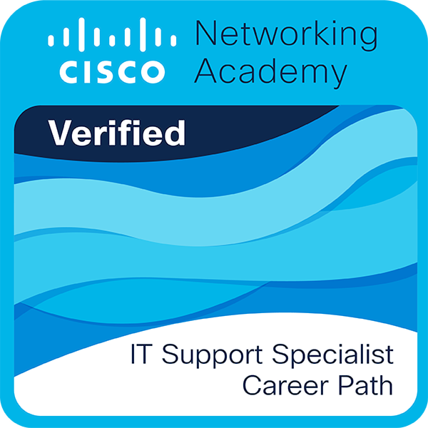

Professional learning for technical support, systems and IT operations.
My credentials cover IT support, networking, operating systems and security. Additional training in software testing and development strengthens my approach to application troubleshooting and technical investigation.
IT supportSystems & networkingCybersecuritySoftware testing
Explore my credentialsFilter by topic or search by course title, provider or keyword.

Cisco Networking Academy
Completed career path Completed
IT Support Specialist Career Path
Cisco Networking AcademyCompleted
Completed training in customer service, structured troubleshooting, computer hardware and upgrades, Windows, macOS and mobile operating systems, network connectivity, and IT security.
These foundations support my work in Help Desk, Service Desk and Technical Support Engineering, including remote support and clear customer documentation.
Completed training in technical support, computer networking, Windows and Linux, system administration, and IT security, with a final course on job-search preparation.
These foundations support my direction in Technical Support Engineering, Help Desk, Service Desk and IT operations.
Certificates covering user support, operating systems, hardware and networking.
IT Support
IT Support & Systems
IT Customer Support Basics
Cisco Networking Academy —
Help desk fundamentals, customer issue records, step-by-step troubleshooting, remote device support, and common email, collaboration and productivity application issues.